This procedure describes how to replace the Reagent Storage waste door.
Inspect Reagent Supplies and unload all reagent packs.
From
Main Menu: Supplies > Reagent Supplies > Unload All Reagent Packs.
Store all the reagent packs in the refrigerator and will be reloaded to the system when the install is complete.
Shut down the instrument
From
Main Menu: Configure > PC Admin > System Admin > Shut Down Instrument.
Enter password (Access2 Support) and select
OK.
Wait for the instrument to shut down.
Turn off the power switch.
Open the SPU.
The SPU is hinged on the left side. The right side is released and can be swung out from the instrument to approximately 45 degrees.
Open the upper left cover of the instrument.
Loosen the locking screw.
The locking screw prevents the SPU from swinging outward from the instrument. It is not necessary to remove the screw because the SPU plate is slotted.
Remove the 3/16-in hex bolt located near the right end of the SPU cover.
Open the lower right access panel on the front of the instrument.
Pull the spring-loaded captive pin that holds the panel (located under the SPU) to the frame.
Grasping the SPU near the right end, swing the right end away from the instrument.
Warning: The SPU off-load area slides forward and rearward as the SPU is swung in and out. To prevent damage to the SPU or the off-load area, confirm that nothing obstructs the movement of the off-load area as the SPU is moved.
(For China and Canada Only.) On the front facing the edge of the Framus assembly, install the Chinese and French labels adjacent to the existing English label.
Note: The labels are in the DxI Installation Kit.
Remove Reagent Storage Module (RSM) cover.
Remove the SPU lower panel.
Remove the reagent storage module cover by removing all six Philip screws.
Move the gripper all the way to the right corner.
Note: Leave the reagent storage module open to for accessing the reagent waste door, the cooler fan bracket, and the reagent nests.
Remove Nests 28-29, 30-31, 44-45, and 46-47 from rear wall.
Note: Be careful not to damage or break the nests.
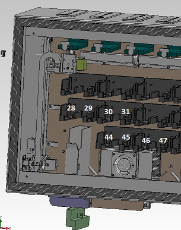
Unfasten fan mounting bracket (4 screws) from RSM rear wall to gain access to the rear end reagent waste door screw.
Note: Do not pull the bracket and be careful not to damage the reagent cooler fan power wires.
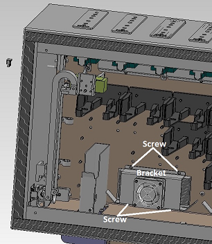
Disconnect air lines from air flow fittings A and B, and the reagent waste door sensor from sensor bracket.
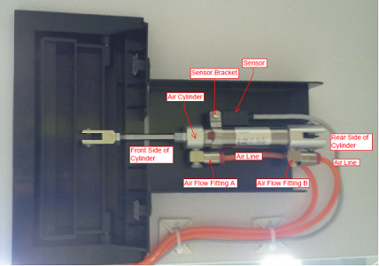
Open the solid waste drawer door.
Remove the solid waste bin or bucket.
Place a bench-top mate or tissue on the waste door.
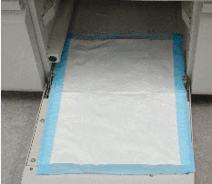
Look inside the solid waste area and locate the reagent waste door and air cylinder.
Caution: Do not damage the solid waste drawer door by laying on the door.
Disconnect the air lines from the air flow fittings on the cylinder. Refer to the reagent waste door image above for more details.
Note: Gently pull the airlines out from the fittings, do not stretch or damage the tubing.
Remove the reagent waste door sensor bracket screw and remove the sensor.
Note: Do not lose the bracket screw, it will be reused.
Cut the zip-tie on the tubing/sensor plastic holder to free the tubing and sensor cable from the reagent waste door.
Note: Be careful not to cut the tubing and sensor cable. If it is difficult to access the zip-tie, then break the holder off the reagent waste door.
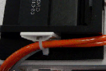
Unfasten four screws and remove the waste door and pack disposal chute/air cylinder assembly from RSM.
Note: Be careful not to damage the disposal chute. It will be reused on the new waste door.
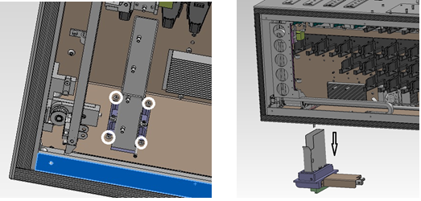
Unscrew both mounting screws and remove pack disposal chute from disposal pack base. Set the chute aside and it will be reused on the new waste door.
Note: When setting down reagent waste door, be careful not to damage the sensor bracket on the cylinder or the cylinder. They will be reused on the new door.
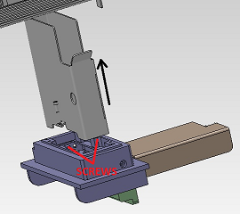
Remove the reagent waste door from the air cylinder.
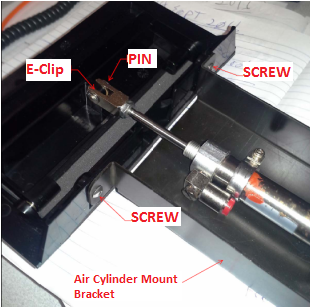
Install the new reagent waste door.
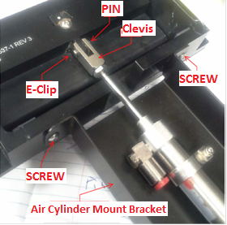
Fasten then new reagent waste door to air cylinder bracket.
Connect clevis to reagent waste door and insert the lock pin.
Clip the E-clip to the pin to lock in air cylinder clevis.
Install the pack disposal chute with two socket head cap screws (40-001847F) to disposal pack base.
Note: When setting down reagent waste door, be careful not to damage the sensor bracket on the cylinder or the cylinder.
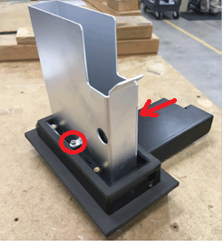
Install the reagent waste door assembly to the RMS.
Install the new tubing/cable holder to rear end of the waste door.
Gently insert the reagent waste door assembly from under the solid waste drawer to the RMS.
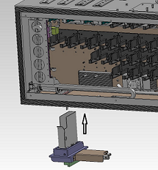
Using four screws fasten the pack disposal chute/disposal pack base to the bottom of the RSM.
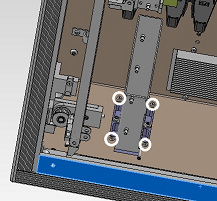
Fasten fan mounting bracket (4 screws) to RSM rear wall.
Note: Be careful not to damage the cooler fan power wires.
Reinstall Nests 28-29, 30-31, 44-45, and 46-47 on to rear wall.
Reinstall sensor into sensor bracket and insert air lines into fittings
Note: Ensure the air lines are inserted into the correct fittings and sensor is installed correctly.
Secure air lines to cable mounts.
Apply cable mount to disposal pack.
Note: Two extra cable mount are included.
Reroute the air lines and waste door sensor to the cable mounts and zip tie them together.
By pass the Upper Left cover switch, SPU switch, and RMS cover switch.
Remove bench-top mate or tissue on the solid waste door.
Move the reagent gripper to home position located at the lower left corner.
Insert the solid waste bin or bucket to the solid waste drawer.
Note: When turning on instrument, system will be initializing and vessels will be tossed to the waste bin or bucket.
Turn on the instrument.
Note: Leave the reagent storage module open to view the operation of thereagent pack gripper.
Check the sensor on the reagent waste door.
Locate the ethernet port under the right hand side of the SPU.
Connect the crossover cable to the SPU ethernet port and the laptop ethernet port.
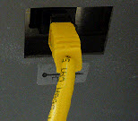
Set-up the laptop for desktop sharing to the AU.
Testing the waste door with a laptop is more affective when observing the door open or close while lying down.
Exit Device Diagnostics and return to the Main Screen.
Manually put reagent packs to the nests 28-29, 30-31, 44-45, and 46-47 that were removed during the install.
Initialize System with Remap and observe the gripper.
Note: If gripper fails to move or place packs on the nests, then recheck all the nests to ensure the screws are secured probably and refer to
RS: Aligning Reagent Gripper X- and Z- Axis procedure.
Remove all bypasses on upper left cover switch, SPU switch, and reagent cover switch.
Reinstall reagent cover and SPU lower panel.
Swing the SPU back in place and pull the spring-loaded captive pin that holds the panel (located under the SPU) to the frame to lock in the panel.
Close the lower right access panel on the front of the instrument.